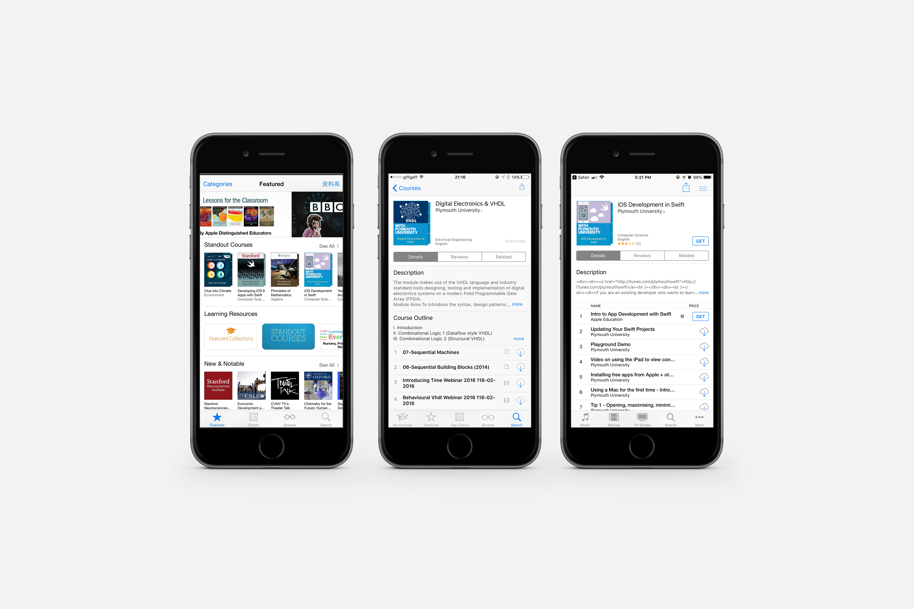
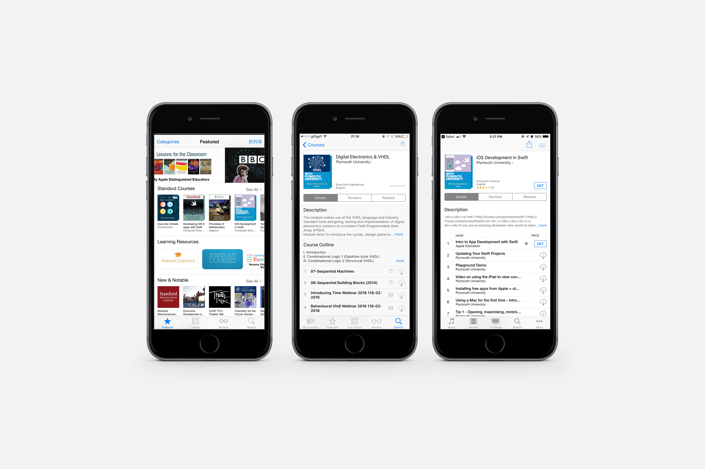

Icon Design
Created using Adobe Illustrator
Summary
Icon design for Plymouth University online course in iTunes U
Goal
Design a new icon/cover for the online course (Swift development and VHDL development) around the course content within the university's branding to attract more users.
Outcome
Online courses with the new design were featured on the font page with siginificant traffics and downloads.

 

Flyer design

Banner design